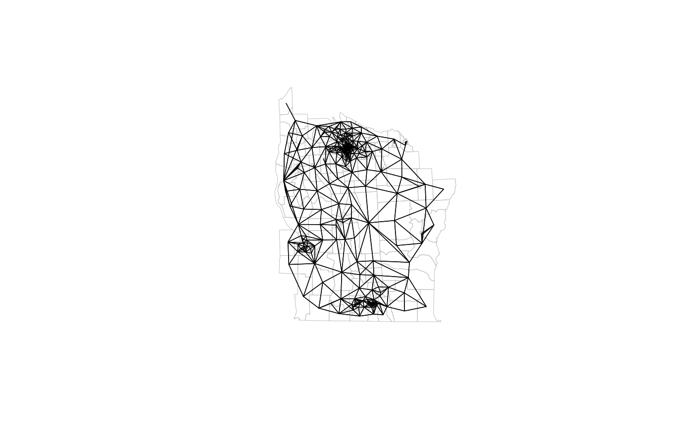
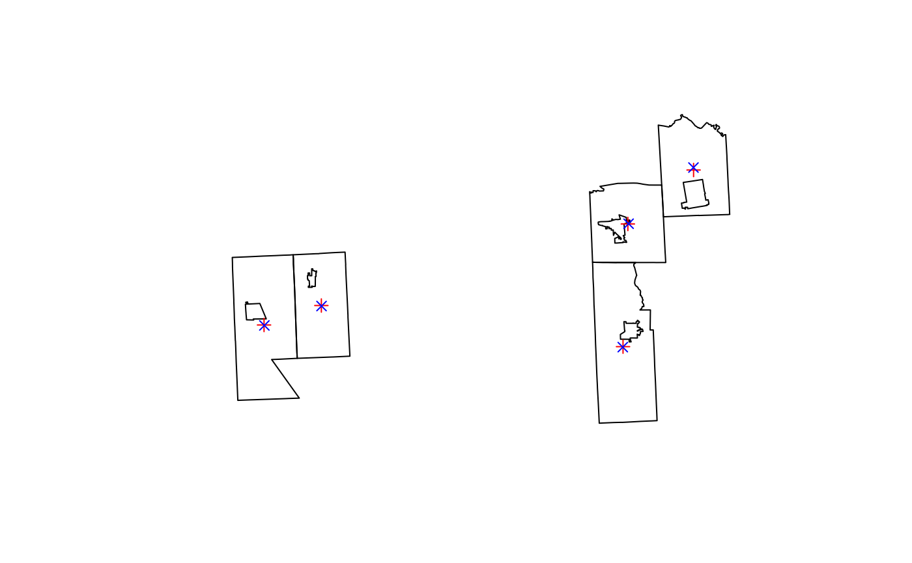
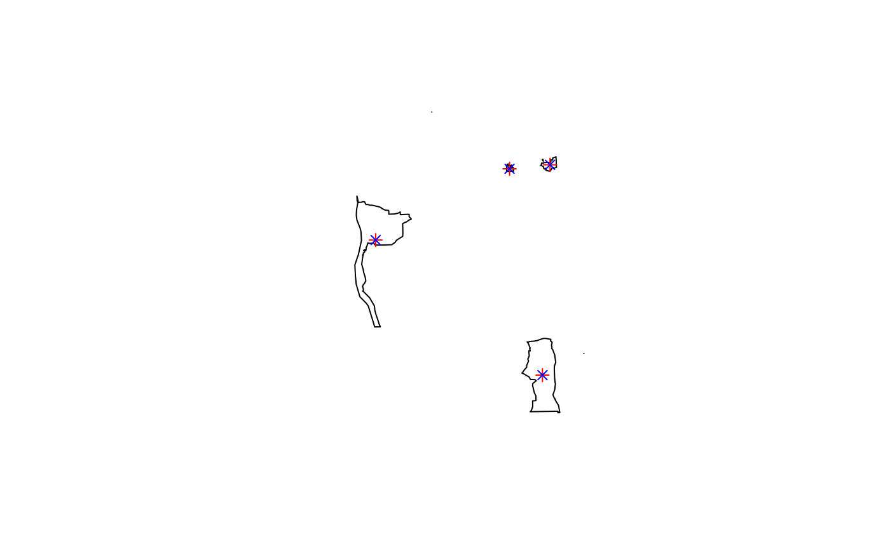
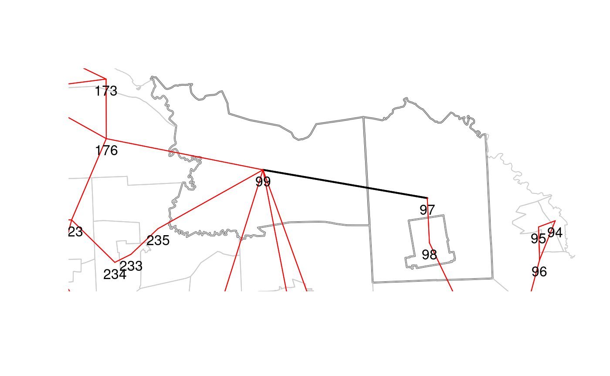

This vignette tracks the legacy nb vignette, which was based on part of the first (2008) edition of ASDAR. It adds hints to the code in the nb vignette to use the sf vector representation instead of the sp vector representation to create neighbour objects.
This is a summary of the results below:
In general, if you need to reproduce results from using sp objects in spdep, coerce sf objects to sp objects before constructing neighbour objects (particularly if polygon centroids are used for point representation).
Further, for new work, you can either coerce from sf to sp objects and just use spdep to create nb objects, or use sf functions to create sparse geometry binary predicate objects and coerce these to neighbour objects.
Polygon validity matters: sf geometries need to be valid; sp geometries (and their use in spdep) pre-date OGC SF validity.
sf functions (st_relate, st_is_within_distance, st_centroid, etc.) appear to be an order of magnitude slower than equivalent sp/spdep/rgeos functions (poly2nb, dnearneigh, gCentroid, etc.)
sf functions appear to scale linearly in n, like sp/spdep functions
We’ll use the whole NY 8 county set of boundaries, as they challenge the implementations more than just the Syracuse subset. The description of the input geometries from ADSAR is: New York leukemia: used and documented extensively in Waller and Gotway (2004) and with data made available in Chap. 9 of [http://web1.sph.emory.edu/users/lwaller/ch9index.htm] (http://web1.sph.emory.edu/users/lwaller/ch9index.htm); the data import process is described in the help file of NY_data in spdep; geometries downloaded from the CIESIN server at ftp.ciesin.columbia.edu, file /pub/census/usa/tiger/ny/bna_st/t8_36.zip, and extensively edited; a zip archive NY_data.zip of shapefiles and a GAL format neighbours list is on the book website. Further, the zipfile is now at: [a new location requiring login] (http://sedac.ciesin.columbia.edu/ftpsite/pub/census/usa/tiger/ny/bna_st/t8_36.zip). The object listw_NY is directly imported from nyadjwts.dbf on the Waller & Gotway (2004) chapter 9 website.
The version of the New York 8 counties geometries used in ASDAR and included as a shapefile in spdep was converted from the original BNA file using an external utility program to convert to MapInfo format and converted on from there using GDAL 1.4.1 (the OGR BNA driver was not then available; it entered OGR at 1.5.0, release at the end of 2007), and contains invalid geometries. What was found in mid-2007 was that included villages were in/excluded by in-out umbilical cords to the boundary of the enclosing tract, when the underlying BNA file was first converted to MapInfo (holes could not exist then).
Here we will use a GPKG file created as follows (rgdal could also be used with the same output; GDAL here is built with GEOS, so the BNA vector driver will use geometry tests: The BNA driver supports reading of polygons with holes or lakes. It determines what is a hole or a lake only from geometrical analysis (inclusion, non-intersection tests) and ignores completely the notion of polygon winding (whether the polygon edges are described clockwise or counter-clockwise). GDAL must be built with GEOS enabled to make geometry test work.):
library(sf)
sf_bna <- st_read("t8_36.bna", stringsAsFactors=FALSE)
table(st_is_valid(sf_bna))
sf_bna$AREAKEY <- gsub("\\.", "", sf_bna$Primary.ID)
data(NY_data, package="spData")
key <- as.character(nydata$AREAKEY)
sf_bna1 <- sf_bna[match(key, sf_bna$AREAKEY), c("AREAKEY")]
sf_bna2 <- merge(sf_bna1, nydata, by="AREAKEY")
sf_bna2_utm18 <- st_transform(sf_bna2, "+proj=utm +zone=18 +datum=NAD27")
st_write(sf_bna2_utm18, "NY8_bna_utm18.gpkg")Since the spdep package was created, spatial weights objects have been constructed as lists with three components and a few attributes, in old-style class listw objects. The first component of a listw object is an nb object, a list of n integer vectors, with at least a character vector region.id attribute with n unique values (like the row.names of a data.frame object); n is the number of spatial entities. Component i of this list contains the integer identifiers of the neighbours of i as a sorted vector with no duplication and values in 1:n; if i has no neighbours, the component is a vector of length 1 with value 0L. The nb object may contain an attribute indicating whether it is symmetric or not, that is whether i is a neighbour of j implies that j is a neighbour of i. Some neighbour definitions are symmetric by construction, such as contiguities or distance thresholds, others are asymmetric, such as k-nearest neighbours. The nb object redundantly stores both i-j and j-i links.
The second component of a listw object is a list of n numeric vectors, each of the same length as the corresponding non-zero vectors in the nbobject. These give the values of the spatial weights for each i-j neighbour pair. It is often the case that while the neighbours are symmetric by construction, the weights are not, as for example when weights are row-standardised by dividing each row of input weights by the count of neighbours or cardinality of the neighbour set of i. In the nb2listwfunction, it is also possible to pass through general weights, such as inverse distances, shares of boundary lengths and so on.
The third component of a listw object records the style of the weights as a character code, with "B" for binary weights taking values zero or one (only one is recorded), "W" for row-standardised weights, and so on. In order to subset listw objects, knowledge of the style may be necessary.
First some housekeeping and setup to permit this vignette to be built when packages are missing or out-of-date:
if (!suppressPackageStartupMessages(require(sf, quietly=TRUE))) {
message("install the sf package")
dothis <- FALSE
}
if (dothis) sf_extSoftVersion()## GEOS GDAL proj.4 GDAL_with_GEOS
## "3.7.1" "2.4.1" "6.0.0" "true"if (!suppressPackageStartupMessages(require(rgdal, quietly=TRUE))) {
message("install the rgdal package")
dothis <- FALSE
}
if (dothis) {
if (exists("rgdal_extSoftVersion")) rgdal_extSoftVersion()
else getGDALVersionInfo()
}## GDAL GDAL_with_GEOS PROJ.4 sp
## "2.4.1" "TRUE" "6.0.0" "1.3-1"if (!suppressPackageStartupMessages(require(rgeos, quietly=TRUE))) {
message("install the rgeos package")
dothis <- FALSE
}
if (dothis) {
if (exists("rgeos_extSoftVersion")) rgeos_extSoftVersion()
else version_GEOS()
}## GEOS sp
## "3.7.1" "1.3-1"Let us read the GPKG file with valid geometries in to ‘sf’ and ‘sp’ objects:
NY8_sf <- st_read(system.file("shapes/NY8_bna_utm18.gpkg", package="spData"), quiet=TRUE)
table(st_is_valid(NY8_sf))##
## TRUE
## 281NY8_sp <- readOGR(system.file("shapes/NY8_bna_utm18.gpkg", package="spData"), verbose=FALSE)
table(gIsValid(NY8_sp, byid=TRUE))##
## TRUE
## 281Here we first generate a queen contiguity nb object using the legacy spdep approach. This first either uses a pre-computed list of vectors of probable neighbours or finds intersecting bounding boxes internally. Then the points on the boundaries of each set of polygons making up an observation are checked for a distance less than snap to any of the points of the set of polygons making up an observation included in the set of candidate neighbours. Because contiguity is symmetric, only i to j contiguities are tested. A queen contiguity is found as soon as one point matches, a rook contiguity as soon as two points match:
suppressPackageStartupMessages(library(spdep))
reps <- 10
eps <- sqrt(.Machine$double.eps)
system.time(for(i in 1:reps) NY8_sp_1_nb <- poly2nb(NY8_sp, queen=TRUE, snap=eps))/reps## user system elapsed
## 0.0446 0.0003 0.0455## Neighbour list object:
## Number of regions: 281
## Number of nonzero links: 1632
## Percentage nonzero weights: 2.066843
## Average number of links: 5.807829Using rgeos STR trees to check the intersection of envelopes (bounding boxes) is much faster than the internal method in poly2nb for large n. Because contiguity is symmetric by definition, the queries only return intersections for higher indices.
STRQ <-system.time(for(i in 1:reps) a2 <- gUnarySTRtreeQuery(NY8_sp))/reps
system.time(for(i in 1:reps) NY8_sp_1_fB_nb <- poly2nb(NY8_sp, queen=TRUE, snap=eps, foundInBox=a2))/reps + STRQ## user system elapsed
## 0.0229 0.0002 0.0233## [1] TRUEUsing sf::st_relate, we can define an un-snapped relational pattern for queen contiguities:
The output from st_queen is a list with attributes:
## user system elapsed
## 0.5193 0.0001 0.5257As we can see, the sf-based contiguity test is an order of magnitude slower than spdep::poly2nb; fortunately, it also scales linearly in the number of observations. spdep::poly2nb uses two heuristics, first to find candidate neighbours from intersecting bounding boxes, and second to use the symmetry of the relationship to halve the number of remaining tests. This means that performance is linear in n, but with overhead for identifying candidates, and back-filling symmetric neighbours. Further, spdep::poly2nb stops searching for queen contiguity as soon as the first neighbour point is found within snap distance (if not identical, which is tested first); second neighbour point for rook contiguities. spdep::poly2nb was heavily optimised when written, as processor speed was a major constraint at that time.
The addition of STR tree queries to identify candidates permits the construction of contiguous neighbour objects for quite large objects, for example the ZCTA 2016 shapefile with 33144 features. sf::st_read imports the data in about 3 s., rgdal::readOGR in under 8 s; in both cases the polygon geometries are valid. Finding the candidate neighbours with rgeos::gUnarySTRtreeQuery takes 4.5 s, and spdep::poly2nb a further 4.4 s. So for the sp variant, the total time is about 17 s., and using sf::st_read 3 s. and coercion to sp 7.5 s., then rgeos::gUnarySTRtreeQuery 4.5 s, and spdep::poly2nb 4.4 s., in total about 20 s. Running st_queen defined above using sf::st_relate takes about 136 s. for a total of 139 s. to generate a queen neighbour object. The contiguity neighbour objects using st_queen and spdep::poly2nb are identical.
Using sf::st_is_within_distance to emulate the snap= argument in spdep::poly2nb is very time-consuming; it takes more than 70 s. to run:
system.time(for (i in 1:reps) NY8_sf_dist_nb <- st_is_within_distance(NY8_sf, NY8_sf, dist=eps))/repsAfter removal of self-contiguities yields the same sets of neighbours.
NY8_sf_dist_nb1 <- lapply(1:length(NY8_sf_dist_nb), function(i) NY8_sf_dist_nb[[i]][-match(i, NY8_sf_dist_nb[[i]])])
all.equal(NY8_sf_dist_nb1, NY8_sp_1_nb, check.attributes=FALSE)We can convert an object of class sgbp (sparse geometry binary predicate) to nb in this way, taking care to represent observations with no neighbours with integer 0:
as.nb.sgbp <- function(x, ...) {
attrs <- attributes(x)
x <- lapply(x, function(i) { if(length(i) == 0L) 0L else i } )
attributes(x) <- attrs
class(x) <- "nb"
x
}The neighbour objects produced by st_queen and spdep::poly2nb contain the same sets of neighbours:
NY8_sf_1_nb <- as.nb.sgbp(NY8_sf_1_sgbp)
all.equal(NY8_sf_1_nb, NY8_sp_1_nb, check.attributes=FALSE)## [1] TRUETo get around the time penalty of using GEOS functions in sf to find contiguous neighbours, we may coerce to the sp representation first:
## user system elapsed
## 0.0573 0.0004 0.0585It is the use of GEOS functionality that costs time, as we can see by using rgeos::gTouches:
## user system elapsed
## 0.6025 0.0008 0.6150## [1] TRUEor equivalently sf::st_touches with very similar timings, like those of sf::st_relate in st_queen:
## user system elapsed
## 0.5353 0.0001 0.5410class(NY8_sf_1_touch) <- "sgbp"
all.equal(as.nb.sgbp(NY8_sf_1_touch), NY8_sp_1_nb, check.attributes=FALSE)## [1] TRUEThe output objects are the same, once again. What we now have as queen contiguity neighbours are:
plot(NY8_sp, border="grey", lwd=0.5)
plot(NY8_sp_1_nb, coordinates(NY8_sp), points=FALSE, add=TRUE, lwd=0.7)
Next, we explore a further possible source of differences in neighbour object reproduction, using the original version of the tract boundaries used in ASDAR, but with some invalid geometries as mentioned earlier:
NY8_sp_old <- readOGR(system.file("shapes/NY8_utm18.shp", package="spData"), verbose=FALSE)
if (suppressPackageStartupMessages(require(rgeos, quietly=TRUE))) suppressWarnings(table(gIsValid(NY8_sp_old, byid=TRUE)))##
## FALSE TRUE
## 5 276We can see that there are a number of differences between the neighbour sets derived from the fully valid geometries and the older partly invalid set:
try(NY8_sp_old_1_nb <- poly2nb(NY8_sp_old), silent = TRUE)
all.equal(NY8_sp_old_1_nb, NY8_sp_1_nb, check.attributes=FALSE)## [1] "Component 57: Numeric: lengths (4, 5) differ"
## [2] "Component 58: Numeric: lengths (5, 6) differ"
## [3] "Component 66: Numeric: lengths (7, 11) differ"
## [4] "Component 73: Numeric: lengths (4, 5) differ"
## [5] "Component 260: Numeric: lengths (8, 9) differ"spdep::poly2nb does not object to using invalid geometries, as it only uses the boundary points defining the polygons (as do the rgeos STR tree construction and query functions, because points are sufficient to construct bounding boxes).
Using the standard “trick”, we can buffer by 0 to try to make the geometries valid:
NY8_sp_old_buf <- gBuffer(NY8_sp_old, width=0, byid=TRUE)
table(gIsValid(NY8_sp_old_buf, byid=TRUE))##
## TRUE
## 281Hoverver, in doing this, we change the geometries, so the new sets of neighbours still differ from those made with the valid geometries in the same ways as before imposing validity:
try(NY8_sp_old_1_nb_buf <- poly2nb(NY8_sp_old_buf), silent = TRUE)
all.equal(NY8_sp_old_1_nb_buf, NY8_sp_1_nb, check.attributes=FALSE)## [1] "Component 57: Numeric: lengths (4, 5) differ"
## [2] "Component 58: Numeric: lengths (5, 6) differ"
## [3] "Component 66: Numeric: lengths (7, 11) differ"
## [4] "Component 73: Numeric: lengths (4, 5) differ"
## [5] "Component 260: Numeric: lengths (8, 9) differ"Tne neighbour sets are the same for the old boundaries with or without imposing validity:
## [1] TRUEUsing the sf route, we also see invalid geometries:
NY8_sf_old <- st_read(system.file("shapes/NY8_utm18.shp", package="spData"), quiet=TRUE)
suppressWarnings(table(st_is_valid(NY8_sf_old)))##
## FALSE TRUE
## 5 276On trying to find contiguities, sf::st_relate fails:
NY8_sf_old_1_sgbp <- try(st_queen(NY8_sf_old), silent = TRUE)
if (class(NY8_sf_old_1_sgbp) == "try-error") cat(NY8_sf_old_1_sgbp)## Error in CPL_geos_binop(st_geometry(x), st_geometry(y), op, par, pattern, :
## Evaluation error: TopologyException: side location conflict at 411447.38362785219 4768469.9111850867.Using the buffer by 0 approach, we can impose validity:
##
## TRUE
## 281We can now find the neighbours, but with differences from the sets found from the valid polygons:
try(NY8_sf_old_1_nb_buf <- st_queen(NY8_sf_old_buf), silent = TRUE)
all.equal(NY8_sf_old_1_nb_buf, NY8_sf_1_nb, check.attributes=FALSE)## [1] "Component 57: Numeric: lengths (4, 5) differ"
## [2] "Component 58: Numeric: lengths (5, 6) differ"
## [3] "Component 66: Numeric: lengths (7, 11) differ"
## [4] "Component 73: Numeric: lengths (4, 5) differ"
## [5] "Component 136: Numeric: lengths (4, 5) differ"
## [6] "Component 208: Numeric: lengths (6, 7) differ"
## [7] "Component 210: Numeric: lengths (5, 7) differ"
## [8] "Component 221: Numeric: lengths (4, 5) differ"
## [9] "Component 224: Numeric: lengths (8, 9) differ"
## [10] "Component 260: Numeric: lengths (8, 9) differ"There are also differences between the sets found when imposing validity on the sf and sp routes.
## [1] "Component 136: Numeric: lengths (4, 5) differ"
## [2] "Component 208: Numeric: lengths (6, 7) differ"
## [3] "Component 210: Numeric: lengths (5, 7) differ"
## [4] "Component 221: Numeric: lengths (4, 5) differ"
## [5] "Component 224: Numeric: lengths (8, 9) differ"Getting a 2D matrix of centroid coordinates (centroids of largest exterior ring) from SpatialPolygons* is just ‘coordinates’, which takes trivial time because the values are computed (as label points) when the objects are constructed:
## user system elapsed
## 7e-04 0e+00 7e-04‘row.names’ gives the IDs (from feature FIDs if read with ‘rgdal::readOGR’):
## [1] TRUEWe can use ‘st_centroid’ to get the centroids; if the sf object is sfc_MULTIPOLYGON, the ‘of_largest_polygon’ attribute should be set to replicate sp ‘coordinates’ behaviour. Curiously, st_centroid is quite time-consuming:
system.time(for (i in 1:reps) if (class(st_geometry(NY8_sf))[1] == "sfc_MULTIPOLYGON") {
NY8_pt_sf <- st_centroid(st_geometry(NY8_sf), of_largest_polygon=TRUE)
} else {
NY8_pt_sf <- st_centroid(st_geometry(NY8_sf))
})/reps## user system elapsed
## 0.0184 0.0000 0.0187if (!isTRUE(all.equal(st_crs(NY8_pt_sf), st_crs(NY8_sf)))) st_crs(NY8_pt_sf) <- st_crs(NY8_sf)
class(st_geometry(NY8_pt_sf))[1]## [1] "sfc_POINT"Before getting the coordinate matrix, we need to drop any Z or M coordinates:
zm <- class(st_geometry(NY8_pt_sf)[[1]])[1]
if (zm %in% c("XYM", "XYZM"))
NY8_pt_sf <- st_zm(NY8_pt_sf, drop=TRUE, what="ZM")
if (zm %in% c("XYZ"))
NY8_pt_sf <- st_zm(NY8_pt_sf, drop=TRUE, what="ZM")We need to check whether coordinates are planar or not:
## [1] FALSEThen ‘st_coordinates’ can be used to get the coordinate matrix (here simply copying-out 2D point coordinates):
## user system elapsed
## 3e-04 0e+00 3e-04Unfortunately, the coordinate matrices differ:
## [1] "Mean absolute difference: 3.822958"The sp route derives the point coordinate values from the centroid of the largest member polygon of the observation, treated as its exterior ring. In sf, and qualifying to request the centroid of the largest POLYGON in a MULTIPOLYGON object, the centroid takes account of possible interior rings. Both are centroids, but the sp coordinates method for Polygons objects returns that of the largest (not metric, treating coordinates as planar) exterior ring, while the sf centroid function takes account of interior rings:
diffs2d <- coords - coords_sf
diffs1d <- apply(diffs2d, 1, function(x) mean(abs(x)))
diffs <- unname(which(diffs1d > 1e-3))
cbind(coords, coords_sf)[diffs, c(1,3,2,4)]## X Y
## 97 438280.6 438265.9 4773250 4773560
## 100 430081.7 430173.7 4766513 4766545
## 103 429478.8 429447.8 4751195 4751135
## 244 391844.1 391866.2 4756330 4756266
## 247 384693.9 384734.3 4753900 4753844## [1] TRUEplot(NY8_sp[diffs,])
points(coords[diffs,], pch=3, col="red")
points(coords_sf[diffs,], pch=4, col="blue")
The reason for the discrepancy is that the label point (a.k.a. centroid) returned by sp::coordinates for Polygons objects takes the centroid gross of holes. This is not done by sf::st_centroid, nor by rgeos::gCentroid (which is much quicker than st_centroid even when using the same underlying GEOS code and converting to GEOS SF representation internally):
## user system elapsed
## 0.0044 0.0000 0.0045The output coordinates are still off, but much less:
## [1] "Mean absolute difference: 0.130541"The affected objects are not those with holes, and probably discrepancies between the sp and sf object implementations of the GEOS function may be disregarded.
gdiffs2d <- gcoords - coords_sf
gdiffs1d <- apply(gdiffs2d, 1, function(x) mean(abs(x)))
gdiffs <- unname(which(gdiffs1d > 1e-3))
cbind(gcoords, coords_sf)[gdiffs, c(1,3,2,4)]## x X y Y
## 66 363587.8 363587.8 4745110 4745110
## 90 411481.7 411481.7 4706273 4706273
## 210 402052.9 402032.5 4765623 4765596
## 224 413639.7 413652.9 4766751 4766742plot(NY8_sp[gdiffs,])
points(coords[gdiffs,], pch=3, col="red")
points(coords_sf[gdiffs,], pch=4, col="blue")
From this, we can check the graph-based neighbours (planar coordinates only):
##
## PLEASE NOTE: The components "delsgs" and "summary" of the
## object returned by deldir() are now DATA FRAMES rather than
## matrices (as they were prior to release 0.0-18).
## See help("deldir").
##
## PLEASE NOTE: The process that deldir() uses for determining
## duplicated points has changed from that used in version
## 0.0-9 of this package (and previously). See help("deldir").if (require(rgeos, quietly=TRUE) && require(RANN, quietly=TRUE)) {
NY85_nb <- graph2nb(soi.graph(NY84_nb, coords), row.names=IDs)
} else NY85_nb <- NULL
NY86_nb <- graph2nb(gabrielneigh(coords), row.names=IDs)
NY87_nb <- graph2nb(relativeneigh(coords), row.names=IDs)Using ‘st_triangulate’ is unsatisfactory, as is ‘rgeos::gDelaunayTriangulation’ because they do not maintain node order, see the example in ‘?rgeos::gDelaunayTriangulation’ for details:
## [1] TRUEThe ‘soi.graph’ function may be re-written to use sf functionality internally, but for now just the triangulation and coordinates:
if (require(rgeos, quietly=TRUE) && require(RANN, quietly=TRUE)) {
NY85_nb_sf <- graph2nb(soi.graph(NY84_nb_sf, coords_sf))
} else NY85_nb_sf <- NULL
if (!is.null(NY85_nb_sf) && !is.null(NY85_nb)) {
isTRUE(all.equal(NY85_nb_sf, NY85_nb, check.attributes=FALSE))
}## [1] FALSEThe discrepancy is for one of the polygons with a hole:
if (!is.null(NY85_nb_sf) && !is.null(NY85_nb)) {
diffs <- diffnb(NY85_nb_sf, NY85_nb)
wdiffs <- which(card(NY85_nb_sf) != card(NY85_nb))
wdiffs
}## [1] 97 99## [1] 310.0521Here the difference between the points is enough to remove the triangulation link between 97 and 99 under the sphere of influence criterion.
if (!is.null(NY85_nb_sf) && !is.null(NY85_nb)) {
plot(NY8_sp[wdiffs,], border="grey30", lwd=2)
plot(NY8_sp, border="grey80", add=TRUE)
plot(diffs, coordinates(NY8_sp), points=FALSE, add=TRUE, lwd=2)
plot(NY85_nb, coordinates(NY8_sp), points=FALSE, add=TRUE, col="red")
text(coordinates(NY8_sp), IDs, pos=1)
}
If we use the GEOS-based coordinates, the distance is reduced to zero:
## [1] 8.149073e-10and the neighbour objects are the same. Using rgeos::gCentroid centroids rather than sp label points would be the choice to make for new work:
NY84g_nb <- tri2nb(gcoords, row.names=IDs)
if (require(rgeos, quietly=TRUE) && require(RANN, quietly=TRUE)) {
NY85g_nb <- graph2nb(soi.graph(NY84g_nb, gcoords), row.names=IDs)
} else NY85g_nb <- NULL
if (!is.null(NY85_nb_sf) && !is.null(NY85_nb)) {
isTRUE(all.equal(NY85_nb_sf, NY85g_nb, check.attributes=FALSE))
}## [1] TRUEIf we coerce from sf to sp representation before extracting point coordinates, we get:
## user system elapsed
## 0.0538 0.0000 0.0543It turns out that the geometries are identical after coercion (as we would expect from obtaining the same contiguity neighbours above):
## [1] TRUEso we can reproduce the sp-based label points by coercing first; if we need to reproduce existing work, this is the best choice:
## [1] TRUEThe remaining two graph-based methods appear to be less sensitive to the differences between the coordinates:
NY86_nb_sf <- graph2nb(gabrielneigh(coords_sf))
isTRUE(all.equal(NY86_nb_sf, NY86_nb, check.attributes=FALSE))## [1] TRUENY87_nb_sf <- graph2nb(relativeneigh(coords_sf))
isTRUE(all.equal(NY87_nb_sf, NY87_nb, check.attributes=FALSE))## [1] TRUEK-nearest neighbours use the coordinate matrices, and can handle Great Circle distances, but this is not demonstrated here, as the data set used is planar:
NY88_nb <- knn2nb(knearneigh(coords, k=1), row.names=IDs)
NY88_nb_sf <- knn2nb(knearneigh(coords_sf, k=1))
isTRUE(all.equal(NY88_nb_sf, NY88_nb, check.attributes=FALSE))## [1] TRUEWhile the first nearest neighbours are found correctly for this data set, the same sensitivity is present with regard to coordinate position at larger k:
NY89_nb <- knn2nb(knearneigh(coords, k=4), row.names=IDs)
NY89_nb_sf <- knn2nb(knearneigh(coords_sf, k=4))
isTRUE(all.equal(NY89_nb_sf, NY89_nb, check.attributes=FALSE))## [1] TRUEDistance neighbours need a threshold - nbdists shows the maximum distance to first nearest neighbour:
## Min. 1st Qu. Median Mean 3rd Qu. Max.
## 82.85 912.85 1801.11 3441.04 4461.26 17033.11dnearneigh can also handle Great Circle distances, but this is not demonstrated here, as the data set used is planar:
system.time(for (i in 1:reps) NY811_nb <- dnearneigh(coords, d1=0, d2=0.75*max_1nn, row.names=IDs))/reps## user system elapsed
## 0.0128 0.0001 0.0130## user system elapsed
## 0.0124 0.0000 0.0125## [1] TRUEWe could use more sf functionality, but it is an order of magnitude slower, through buffering all points by the threshold while distance is symmetric, so i to j and j to i are equal. Buffering also presupposes planar coordinates. In addition, the point itself intersects, so has to be removed:
system.time(for (i in 1:reps) {NY811_buf <- st_buffer(NY8_pt_sf, dist=0.75*max_1nn, nQuadSegs=30)
NY811_nb_sf_buff0 <- st_intersects(NY811_buf, NY8_pt_sf)
NY811_nb_sf_buff <- lapply(1:length(NY811_nb_sf_buff0), function(i) NY811_nb_sf_buff0[[i]][-match(i, NY811_nb_sf_buff0[[i]])])})/reps## user system elapsed
## 0.0347 0.0000 0.0351And it does not match:
## [1] "Component 123: Numeric: lengths (106, 107) differ"
## [2] "Component 142: Numeric: lengths (106, 107) differ"
## [3] "Component 184: Numeric: lengths (77, 78) differ"
## [4] "Component 201: Numeric: lengths (57, 58) differ"This time the problem is in the number of line segments in each buffer circle quadrant, so if we smooth the circle, things get better:
system.time(for (i in 1:reps) {NY811_buf <- st_buffer(NY8_pt_sf, dist=0.75*max_1nn, nQuadSegs=90)
NY811_nb_sf_buff0 <- st_intersects(NY811_buf, NY8_pt_sf)
NY811_nb_sf_buff <- lapply(1:length(NY811_nb_sf_buff0), function(i) NY811_nb_sf_buff0[[i]][-match(i, NY811_nb_sf_buff0[[i]])])})/reps## user system elapsed
## 0.0764 0.0001 0.0774## [1] TRUEWe can do the same with sf::st_is_within_distance too:
system.time(for (i in 1:reps) {NY811_nb_sf_dist0 <- st_is_within_distance(NY8_pt_sf, NY8_pt_sf, dist=0.75*max_1nn)
NY811_nb_sf_dist <- lapply(1:length(NY811_nb_sf_dist0), function(i) NY811_nb_sf_dist0[[i]][-match(i, NY811_nb_sf_dist0[[i]])])})/reps## user system elapsed
## 0.0526 0.0000 0.0531## [1] TRUE